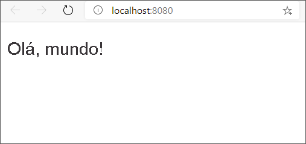

A maneira mais comum de iniciar qualquer curso de programação é exibir o texto "Olá, mundo!". Continuando com essa história, vamos usar o React para exibir o texto famoso.
Criaremos dois itens para a base do nosso projeto:
HTML
<!DOCTYPE html>
<html lang="en">
<head>
<title>Recipes</title>
</head>
<body>
<div id="app"></div>
<script type="module" src="/dist/index.js"></script>
</body>
</html>
Observe duas linhas importantes no HTML:
Observação
O nome do arquivo que estamos importando é index.js. Não usamos index.jsx, porque os navegadores não podem renderizar arquivos JSX. Sempre precisamos de um empacotador (como o Snowpack) para gerar JavaScript. Referenciamos o JavaScript em vez do JSX.
O atributo type="module" nos permite usar instruções import nos arquivos JavaScript (ou JSX). Essa funcionalidade é relativamente nova para navegadores. Ela nos ajuda a importar os pacotes e componentes necessários.
Precisamos de código para renderizar o aplicativo do React dentro do HTML. Tradicionalmente, o arquivo index.jsx é usado para renderizar o aplicativo.
jsx
import React from 'react';
import ReactDOM from 'react-dom';
ReactDOM.render(
<h1>Hello, world!</h1>,
document.getElementById('app')
);
O arquivo index.jsx começa importando duas bibliotecas importantes. A primeira, React, permite usar o JSX. Ela será importada em todo componente ou arquivo JSX que criarmos. A segunda biblioteca, ReactDOM, renderiza o aplicativo dentro do HTML.
O render utiliza dois parâmetros:
A capacidade de usar HTML dentro da codificação JavaScript faz parte da potência do JSX.
Agora que criamos o código, vamos ver nosso site em ação.
Bash
npm start
O navegador padrão deve abrir e exibir a página automaticamente. Se a página não aparecer de forma automática, abra o navegador e vá para http://localhost:8080. Agora você deverá ver sua página.
Nosso código JSX é convertido no HTML e no JavaScript apropriados para exibição no navegador. Abra o arquivo JavaScript gerado pelo Snowpack: http://localhost:8080/dist/index.js. Você verá o seguinte código:
JavaScript
import React from "../web_modules/react.js";
import ReactDOM from "../web_modules/react-dom.js";
ReactDOM.render(/* @__PURE__ */ React.createElement("h1", null, "Hello, world!"), document.getElementById("app"));
Concentre-se na linha de código que gera o elemento h1 e coloca o texto dentro dele:
JavaScript
React.createElement("h1", null, "Hello, world!")
O uso desse código é semelhante ao uso de document.createElement com o JavaScript vanilla. As ferramentas fornecidas pelo Snowpack e outros empacotadores permitem usar o JSX para gerar automaticamente o código apropriado amigável para o navegador.